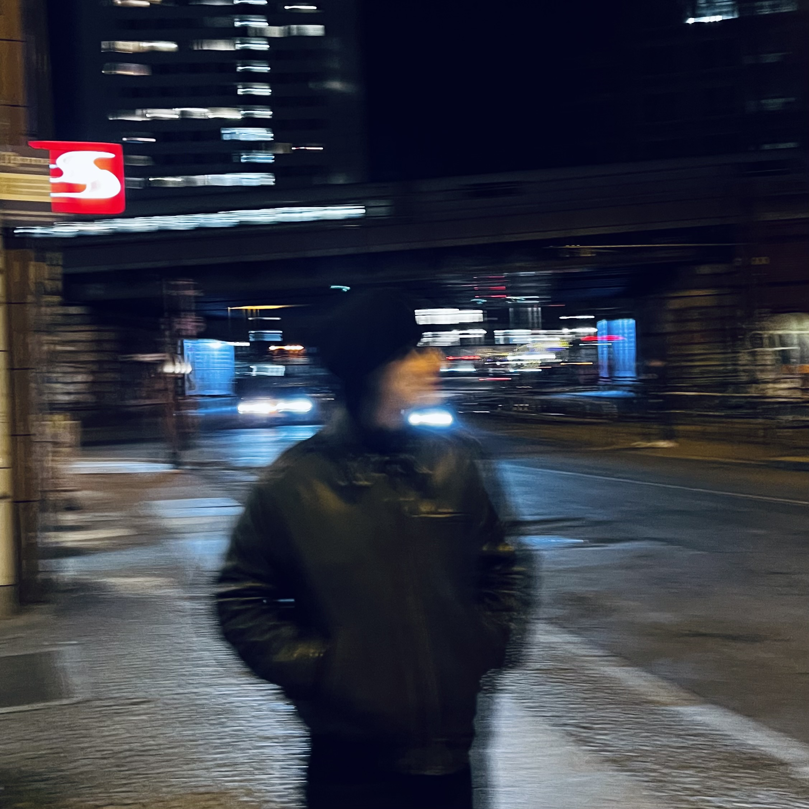
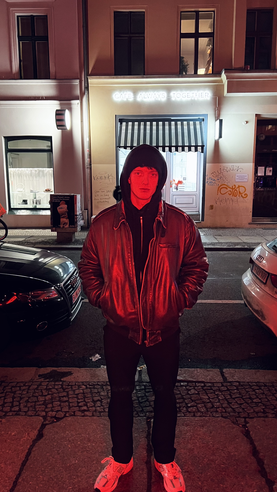

antonin ist Artist und Producer — geboren als Antonin Götz, aufgewachsen in Göttingen, heute in Berlin. Mit einem DIY- und Beatmaker-Hintergrund hat er sich seinen Sound selbst erarbeitet: organisch, eigenwillig, unverkennbar.
Sein Spektrum reicht von dunklem Techno, Trance und Deep House bis hin zu Hip-Hop und Pop-Produktionen. Kein Genre als Grenze — verschiedene Welten, ein Sound.
Bookings, Features, Beat Placements, Mixing & Mastering — meld dich einfach. Ich antworte so schnell wie möglich.
contact@antonin-music.com